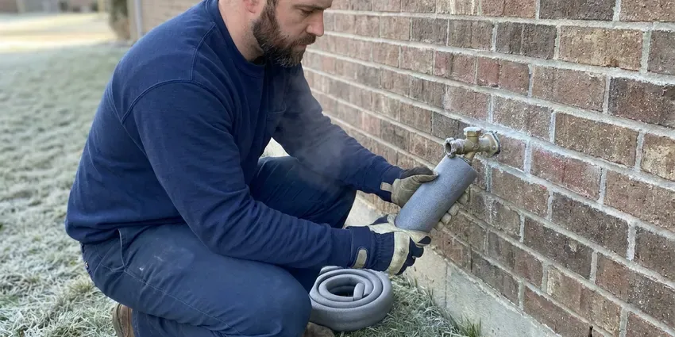

New Construction Plumbing in Horace, ND
When you're building a new home in Horace, ND, you need plumbing installed right from the ground up. HPN Plumbing specializes in complete new construction plumbing services.
- Reliable Installations
- Quick Bids From Your Plans
- Code Compliant Work
- Seasoned Plumbers

Need New Construction Plumbing Done Right in Horace, ND?
Call today to reserve a crew for your underground, rough-in and trim dates.
New Construction Plumbing in Horace, ND Built for North Dakota Conditions
HPN Plumbing provides complete new construction plumbing services throughout Horace, ND. We understand the real value of a properly designed and installed plumbing system in any new home, ensuring longevity and preventing future problems. Strong winds and extreme cold can drive frost into walls and crawlspaces, reaching pipes that seem well protected.
Our expertise includes:
- Sizing and installing main water and sewer lines.
- Gas piping, water heater venting and pressure-tested final connections
- Under-slab drain, waste and vent systems with protected penetrations

Additional Plumbing Maintenance Services in Horace, ND
Our maintenance and specialty plumbing services in Horace, ND catch small problems before they become emergencies.


Customers
Why Choose HPN Plumbing for New Construction Plumbing in Horace, ND?
Builders choose us because we show up on the day we commit to and leave the site tidy for the next trade. Our bids list every fixture, valve and stub-out, so there are no surprise change orders at trim.
- Timely Completion, Our team works with other trades to ensure plumbing phases are completed on schedule, keeping your project on track.
- Schedule Discipline, We book underground, top-out and trim dates up front and keep them.
- Experienced Team, Our licensed plumbers have deep experience in new home plumbing, understanding the unique challenges of different foundation types.
Citywide Coverage
HPN Plumbing provides full new construction plumbing coverage throughout every neighborhood of Horace. We understand the varying soil conditions and development regulations that can impact plumbing installations across different parts of the area.
Experienced Team
Our new construction crews are led by journeyman plumbers who have plumbed hundreds of new homes on slabs, crawlspaces and basements. They read architectural and plumbing plans with ease and catch conflicts with framing or HVAC before they become costly.
Safety-First Approach
We install to the plumbing and fuel gas codes adopted by your city or county and schedule each required inspection. Gas lines are pressure tested and tagged, and water heaters get proper venting, seismic straps where required and a working T&P discharge line.
Trusted Certified Horace Plumbing Services Professionals
At HPN Plumbing, we take pride in providing certified plumbing services throughout Horace, ND. Backed by leading industry credentials, our experienced plumbers combine technical skill with genuine customer care. Whether it is repair, installation, or maintenance, we follow strict safety and quality standards to deliver lasting results you can trust.
Call Us Now PHCC Plumbing Contractor Recognition
PHCC Plumbing Contractor Recognition Better Business Bureau (BBB) Accreditation
Better Business Bureau (BBB) Accreditation Angi Certified Pro
Angi Certified Pro ISO 9001 Quality Management Certification
ISO 9001 Quality Management CertificationReliable New Construction Plumbing Services in Horace, ND
Final Trim and Fixture Setting in Horace
At trim we install toilets, faucets, garbage disposals, dishwashers, ice maker boxes and laundry connections. We work with fixtures from Moen, Delta, Kohler, American Standard and the other brands builders often choose, or with owner-supplied fixtures. Every fixture is checked for flow, drainage and leaks, and angle stops are set straight and tight. We finish by running every fixture at once to verify the system drains and vents properly under load.

Water Heater and Recirculation Installation in Horace, ND
New homes commonly use tank water heaters in the garage, basement or utility room, or tankless units on an exterior wall. We size the heater to your bathroom count and install gas or electric connections, venting, an expansion tank and drain pan where required. Many owners add a dedicated recirculation line during rough-in, which is much less expensive than retrofitting later. Water in North Dakota is often very hard, with high mineral and sulfate content that leaves deposits in water heaters and fixtures. If treatment makes sense for your water, we suggest planning space for a softener or filter loop at the same time.
Gas Line Installation for New Construction in Horace, ND
Proper and safe gas line installation is a key component of new construction plumbing. Our trained technicians install new gas lines for appliances like furnaces, water heaters, stoves, and outdoor grills. We use approved materials and conduct rigorous leak testing to ensure the safety and integrity of your gas system, meeting all North Dakota and local Horace codes.
Fixture Installation and Finishing in Horace, ND
Once the rough-in is complete and walls are up, HPN Plumbing handles the final installation of all plumbing fixtures. This includes sinks, toilets, showers, bathtubs, dishwashers, and washing machines. We make sure everything is properly aligned, sealed, and fully functional, providing a polished finish to your new home's plumbing system.
Guest House, ADU and Addition Plumbing in Horace, ND
Guest houses and additions need plumbing that ties into the existing house without overloading old drain lines. We locate the existing sewer, check its condition with a camera and confirm there is enough fall to the new building. Supply lines can be branched from the main house or run as a separate service, based on distance and pressure. We also handle the trenching between structures and restore the yard when we are done.
Residential New Build Plumbing in Horace
For new homes, our residential new construction plumbing includes the complete installation of water supply lines, drain waste vent systems, and gas lines. We confirm proper sizing and pressure for all fixtures, from showers to kitchen sinks, while accounting for local water quality and potential foundation movement. Water in North Dakota is often very hard, with high mineral and sulfate content that builds scale in water heaters and fixtures. Our process includes meticulous planning to prevent future slab leaks or drainage problems tied to the soil under your lot.
Residential New Construction Plumbing in Horace
HPN Plumbing focuses on complete plumbing system installations for new residential homes. This includes designing the layout, installing all water supply lines, drain lines, and vent piping. We work closely with homeowners and builders to ensure the plumbing system is tailored to the home's specifications and future needs, using materials like PEX and copper for supply lines and PVC for drains, chosen for durability in North Dakota climate.

Commercial and Multifamily New Construction in Horace
We also plumb small commercial buildouts, offices, retail suites and multifamily projects. These jobs frequently require grease interceptors, backflow assemblies, commercial water heaters and ADA compliant fixtures. We read commercial plans, coordinate submittals and keep the general contractor updated through each inspection. Our crews scale up so plumbing never becomes the bottleneck on your project.
New Construction Plumbing Near Me in Horace, ND
When you search for a new construction plumber near me, you want a crew that can be on site the morning your foundation is formed. Our crews are based close enough to Horace to keep that kind of schedule. We can walk your lot, review your plans and give you a firm bid quickly.
When you are searching for new construction plumbing near me in Horace, look no further than HPN Plumbing. Our local team is ready to serve all areas, providing timely and reliable service for your building projects. We take pride in being the go-to plumbing partner for builders and developers across the area.
HPN Plumbing at a Glance
- Licensed and insured plumbers serving Horace, ND
- 24/7 emergency service with same-day scheduling
- Clear written estimates, no hidden fees
- 4.9-star rated by 408+ North Dakota customers
Horace Map
Horace Information
- Population
- 5,643
- Area codes
- Local
- Service area
- Horace and communities within 40 miles
- Nearby
- West Fargo, Fargo, Wahpeton, Valley City
New construction plumbing in Horace, ND requires careful attention to detail, because shifting soil can put stress on foundations and underground piping. Basements are standard in most homes, and many rely on sump pumps to handle groundwater during wet springs.
Expert Services
Trust our professionals for reliable HPN Plumbing solutions in Horace, ND.
Our Specialized Plumbing Services in Horace, ND
At HPN Plumbing, we provide a complete range of plumbing services across Horace, ND. From leak detection to full system installations, our team ensures fast, precise, and affordable service for both residential and commercial properties. Explore our core services below:


Here Is How Our New Construction Plumbing Process Works in Horace, ND
Building a new home requires careful coordination, and our plumbing process follows that. Here is how HPN Plumbing delivers a successful new construction plumbing installation.
Request a Quote
Start by contacting HPN Plumbing at (701) 403-1348 to discuss your new construction plumbing project. We'll gather details about your blueprints and project scope to provide a complete estimate.
Plan & Design
Our experts review your building plans and collaborate with your construction team. We optimize plumbing layouts for efficiency, code compliance, and future serviceability.
Rough-In Installation
We install all underground and in-wall piping, including water supply, drain, and vent lines. This critical phase is performed with careful attention to detail before foundations and walls are closed.
Frequently Asked Questions About New Construction Plumbing in Horace
The cost of new construction plumbing in Horace varies widely based on the size and complexity of the project, number of bathrooms, and fixture choices. For a standard 3-bedroom, 2-bathroom home, rough-in and finish plumbing can range from $10,000 to $25,000. Commercial projects or luxury homes with advanced systems will be higher.
For new construction, we typically use PEX, or cross-linked polyethylene, for water supply lines due to its flexibility, durability, and resistance to corrosion. For drain, waste, and vent systems, we primarily use PVC piping because it's strong, lightweight, and cost-effective.
Several inspections are required during new construction plumbing. These usually include an underground or rough-in inspection before walls are closed, a top-out inspection if applicable, and a final inspection after all fixtures are installed and the system is operational. We schedule and coordinate all inspections to ensure compliance.
Yes, we can build a water softening system into your new construction plumbing design. Water in North Dakota is often very hard, with high mineral and sulfate content that leaves deposits in water heaters and fixtures. A softener loop can be installed during the rough-in phase to protect your entire plumbing system and appliances from mineral buildup.
HPN Plumbing stands behind our new construction plumbing work with a comprehensive warranty on both labor and materials. Specific warranty terms vary by project and components and are written out in your contract, and we honor manufacturer warranties on all installed parts and fixtures. Your satisfaction and peace of mind are our priority.
We install a wide range of reputable plumbing fixture brands based on your preferences and budget, including Kohler, Moen, Delta, American Standard, and Toto. We can also handle specific requests if you have a particular brand or style in mind, ensuring quality and availability for your new home.
In many homes, yes. Water in North Dakota is often very hard, with high mineral and sulfate content that leaves deposits in water heaters and fixtures. A softener loop costs a few hundred dollars during construction and far more to retrofit later. The loop lets you add a softener or filtration system any time without opening up walls.
Strong winds and extreme cold can push frost into walls and crawlspaces, reaching pipes that seem well protected. Homeowners around Horace should insulate exposed pipes, drain outdoor spigots and keep the heat on when away in winter. We select materials and installation methods that can handle local conditions, insulating pipes and burying lines at adequate depths where freezing is a risk. We also use materials that can handle thermal expansion and contraction, preventing leaks and bursts.
What People Are Saying About Our Plumbing Experts?

Daniel K.
A pipe burst at 11 pm and they actually answered. The plumber showed up within the hour, shut everything down, and had us back to normal the next morning. Could not ask for more.
Emergency Plumbing · Horace, ND
James P.
Our commercial plumbing system had a leak under the sink, and HPN Plumbing handled it professionally. The plumbers arrived quickly and restored everything without disruption to our customers.
Commercial Plumbing · Fargo, ND
Emily R.
I called HPN Plumbing for plumbing repair, and the technician was fast, polite, and thorough. They explained the problem clearly and fixed it the same day. I will definitely hire them again. Highly recommended!
Plumbing Repair · Valley City, ND
Patricia H.
We had a slab leak that two other companies could not find. HPN Plumbing located it in under an hour, explained our options, and the price matched the quote to the dollar.
Slab Leak Repair · Grand Forks, ND
Sofia M.
Two new toilets installed in one visit, no mess left behind, and the tech even adjusted a faucet he noticed was dripping. Fair pricing and really friendly.
Toilet Installation · Fargo, ND
Mark T.
When our office needed drain cleaning, HPN Plumbing provided quick, reliable service. The plumber arrived on time and made sure every drain flowed perfectly before leaving. Very satisfied.
Drain Cleaning · Wahpeton, ND